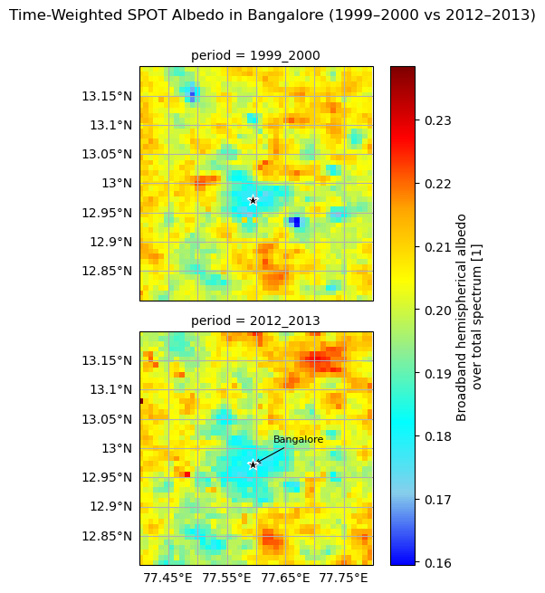
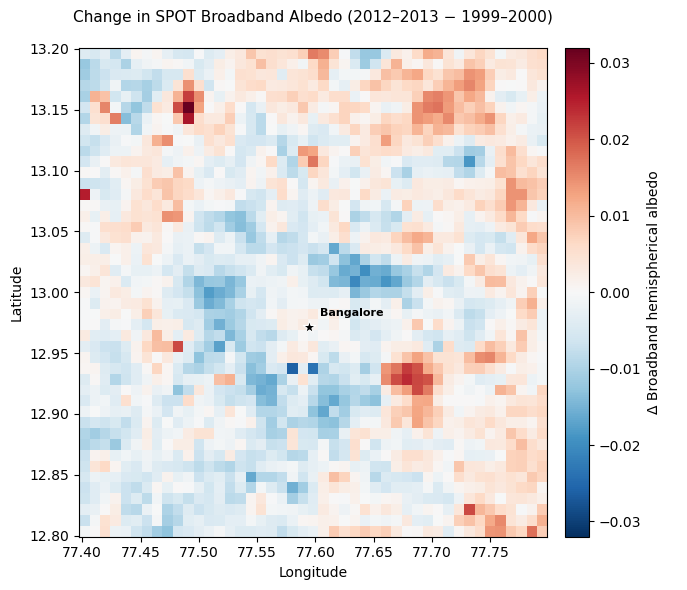
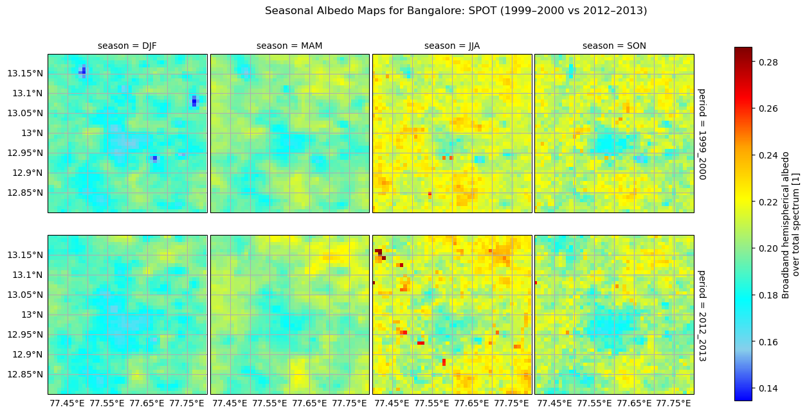
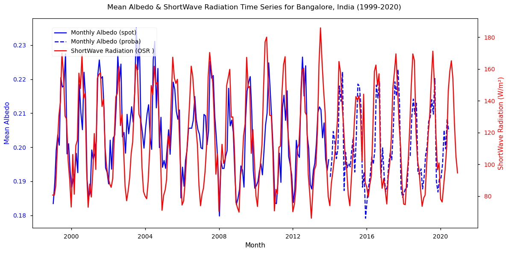

1.2.1. Evaluation of temporal consistency of satellite-derived surface albedo and its Coherence with the Earth radiation budget#
Production date: 30-09-2024
Produced by: University of Salerno - Department of Physics (Fabio Madonna and Faezeh Karimian Sarakhs)
🌍 Use case: Surface albedo variability and its implications for Urban Heat Island intensity#
❓ Quality assessment question#
• Are satellite-derived surface albedo estimates temporally consistent over time, and are they physically coherent with outgoing shortwave radiation from Earth Radiation Budget products?
Urban heat islands (UHIs) are metropolitan areas that are significantly warmer than their rural surroundings due to reduced vegetation, the thermal properties of urban materials, anthropogenic heat release, and atmospheric pollution. These elevated temperatures can increase heat stress and mortality during heat waves, making UHI monitoring and mitigation an important objective for urban planning and public health. Surface albedo is a key variable in this context because it controls the fraction of incoming solar radiation reflected by the surface and therefore influences the urban surface energy balance [1], [2].
Satellite-derived surface albedo products are increasingly used to monitor urban environmental change and to assess the impact of mitigation strategies. In India, rapidly expanding cities such as Delhi, Mumbai, and Bangalore have experienced intensified UHI effects [3], [4]. Bangalore is particularly suitable as a case study because of its rapid urbanization and documented mitigation efforts, including urban greening and the use of reflective materials [5]. These interventions modify the surface radiative balance through different physical mechanisms, while changes in surface albedo are reflected in the outgoing shortwave radiation observed from space [1], [2], [6].
Previous studies have shown that urbanization is associated with declining albedo and increasing land surface temperature [6], that realistic representations of albedo and vegetation improve urban climate simulations [7], and that UHI intensity is strongly influenced by surface albedo, vegetation fraction, and land cover [8], [9]. The reliable application of satellite-derived albedo products therefore depends on their temporal stability and on their physical consistency with independent observations of the Earth’s radiation budget.
In this notebook, Bangalore is used as a representative case study to evaluate the temporal consistency of satellite-derived surface albedo products and their physical coherence with outgoing shortwave radiation (OSR) from Earth Radiation Budget datasets. This quality assessment provides confidence in the use of these products for monitoring long-term urban radiative changes and supporting studies of UHI mitigation.
📢 Quality assessment statements#
These are the key outcomes of this assessment
• The satellite-derived surface albedo time series (SPOT and PROBA-V) exhibit stable seasonal variability over the 1999–2020 period. The transition between the two sensors does not indicate any obvious artificial discontinuities, supporting the temporal consistency of the Climate Data Record.
• A statistically significant positive correlation (Pearson’s r ≈ 0.73) is found between surface albedo and outgoing shortwave radiation (OSR), demonstrating physical coherence between the satellite-derived albedo product and Earth Radiation Budget observations, as expected from radiative transfer principles.
• The observed negative long-term albedo trend (–0.0036 per decade) is accompanied by a corresponding decrease in OSR (≈ –6–7 W m⁻² per decade), providing additional evidence of the internal radiative consistency between the two datasets.
• The observed relationships are consistent with previous studies reporting links between declining albedo, increasing surface temperatures, and UHI intensity, as well as the influence of albedo, vegetation, and land cover on urban climate [2], [6], [7], [9], [10].
• Overall, the results indicate that the satellite-derived albedo Climate Data Record is temporally consistent and physically coherent with independent radiation budget observations, supporting its suitability for monitoring long-term changes in urban surface radiative properties.
📋 Methodology#
The primary objective of this assessment is to evaluate the temporal consistency of the satellite-derived surface albedo Climate Data Record over Bangalore for the period 1999–2020, and to assess its physical coherence with outgoing shortwave radiation (OSR) from Earth Radiation Budget products. Temporal consistency is investigated by analysing the long-term albedo time series derived from the SPOT (1999–2013) and PROBA-V (2014–2020) datasets, including the transition between the two sensors and the stability of seasonal variability. Physical coherence is assessed by examining the relationship between surface albedo and OSR through correlation and trend analyses. In addition, time-weighted albedo maps for two representative periods (1999–2000 and 2012–2013) are compared to illustrate the spatial evolution of surface reflectivity over Bangalore.
The methodology adopted for the analysis is split into the following steps:
1. Dataset selection and set up the code
Import all required libraries
Spatial and temporal definitions for map plots
Spatial and temporal definition for time series plots
2. Data Retrieval and Preparation
Define required functions
Download surface albedo data from SPOT VGT v2 (time period 1999–2014) and PROBA VGT v2 (time period 2014- 2021), both dataset with horizontal_resolution of 1 km
Computation of time series
Download EUMETSAT CLARA-A3 shortwave downward radiation
3. Plot and describe the results
Time-Weighted SPOT Albedo Comparison for Southern India and Bangalore Between 1999–2000 and 2012–2013
Seasonal SPOT-Derived Albedo in Bangalore (1999–2000 vs 2012–2013)
Monthly Mean Albedo and Shortwave Radiation in Bangalore, India (1999–2020)
Pearson Correlation of Albedo and Outgoing Shortwave Radiation (Bangalore, 1999–2020)
Sensitivity of OSR to Surface Albedo Variations Over Bangalore: SPOT Era (2000–2013)
📈 Analysis and results#
1. Dataset selection and set up the code#
Import all required libraries#
In this section, we import all the relevant packages needed for running the notebook.
Spatial and temporal definitions for map plots#
The analysis performed in this assessment focuses on data from July 1999 to June 2020, using monthly averages from the SPOT and PROBA. The study region is Bangalore, an urban heat island. The map plots show albedo for the two periods 1999–2000 and 2012–2013, while the time series plot presents albedo data for 1999–2020.
Spatial and temporal definition for time series plots#
2. Data Retrieval and Preparation#
In this step, the selected satellite data is downloaded using predefined time and variable settings.
Define required functions#
The following functions were defined to support the analysis of albedo data:
Download surface albedo data from SPOT VGT v2 (time period 1999–2014) and PROBA VGT v2 (time period 2014- 2021), both dataset with horizontal resolution of 1 km.#
100%|██████████| 24/24 [00:07<00:00, 3.32it/s]
100%|██████████| 24/24 [00:07<00:00, 3.17it/s]
100%|██████████| 15/15 [00:05<00:00, 2.87it/s]
100%|██████████| 7/7 [00:01<00:00, 4.11it/s]
Computation of time series#
Download & Process Radiation Data#
100%|██████████| 264/264 [00:53<00:00, 4.91it/s]
100%|██████████| 264/264 [00:22<00:00, 11.87it/s]
3. Plot and describe the results#
Time-Weighted SPOT Albedo Comparison for Southern India and Bangalore Between 1999–2000 and 2012–2013#
To examine spatial variations in surface reflectivity, time-weighted broadband hemispherical albedo maps were generated for Bangalore using SPOT data for two representative periods: 1999–2000 and 2012–2013. These maps allow for a direct comparison of albedo patterns across more than a decade of urban growth. The spatial maps of albedo in the city of Bangalore for the years 1999–2000 and 2012–2013 reveal that the spatial resolution of the CDS surface albedo 10-daily gridded dataset is sufficient to quantify and monitor the effect of greenery and other mitigation strategies on UHI.
Note: Time-weighted albedo refers to the average albedo computed from multiple observations within the selected period, where each observation contributes according to its temporal coverage. This approach reduces the influence of irregular observation frequency and provides a representative estimate of the mean surface reflectivity.
/data/wp5/.tmp/ipykernel_2898540/3584771786.py:32: DeprecationWarning: self.axes is deprecated since 2022.11 in order to align with matplotlibs plt.subplots, use self.axs instead.
for ax in facet_albedo_zoom.axes.flat:

Figure 1. Time-weighted broadband hemispherical albedo maps derived from SPOT for two periods: 1999–2000 and 2012–2013 over Bangalore.
Spatial Changes in Broadband Albedo Between 1999–2000 and 2012–2013#
To better highlight the spatial changes in surface albedo over the study period, a difference map was produced by subtracting the time-weighted mean broadband albedo for 1999–2000 from that of 2012–2013.
Longitude range: 75.00000000034788 to 79.99107142892615
Latitude range: 10.008928571333087 to 14.999999999911324
Subset shape: (45, 45)

Figure 2. Difference in the time-weighted SPOT broadband hemispherical albedo between the two study periods (2012–2013 minus 1999–2000). Positive values (red) indicate an increase in broadband albedo, whereas negative values (blue) indicate a decrease over the study period. The black star marks the approximate location of Bangalore city centre.
The difference map reveals that changes in broadband albedo are spatially heterogeneous across the study area. The difference map provides a direct visualization of localized increases and decreases in surface albedo between the two periods
Seasonal SPOT-Derived Albedo in Bangalore (1999–2000 vs 2012–2013)#
To better understand how surface reflectivity varies throughout the year, seasonal albedo maps were generated for Bangalore using SPOT observations for the periods 1999–2000 and 2012–2013. The results are organized according to the standard climatological seasons: DJF (winter), MAM (pre-monsoon), JJA (monsoon), and SON (post-monsoon). The seasonal albedo maps for 1999–2000 and 2012–2013 reveal lower albedo values in the city center compared to the surrounding areas. This low-albedo feature aligns with Bellandur Lake, as confirmed by remote sensing analysis of urban lakes in Bangalore [10]. This finding aligns with the research by Kanga et al. (2022) [3], Ramachandra and Aithal (2019) [4], and TERI (2017) [5], which report the city center is dominated by built-up areas interspersed with some green spaces, while the outskirts are predominantly agricultural land (vegetation) with some open fields and infrastructural development areas. Moreover, over the two time periods, an increase in the area with lower albedo values is observed in the city center.
Text(0.5, 1.05, 'Seasonal Albedo Maps for Bangalore: SPOT (1999–2000 vs 2012–2013)')

Figure 3. Seasonal broadband hemispherical albedo maps for Bangalore derived from SPOT observations for two periods (1999–2000, top row; 2012–2013, bottom row). Panels show the climatological seasons: DJF (winter), MAM (pre-monsoon), JJA (monsoon), and SON (post-monsoon).
Monthly Mean Albedo and Shortwave Radiation in Bangalore, India (1999–2020)#
To assess the physical consistency between satellite-derived broadband albedo and outgoing shortwave radiation (OSR), monthly mean albedo derived from SPOT and PROBA observations was compared with monthly mean OSR from the EUMETSAT CLARA-A3 Satellite Earth Radiation Budget Climate Data Record for the period 1999–2020. The comparison aims to evaluate whether temporal variations in surface reflectivity are consistent with corresponding variations in reflected shortwave radiation.

Figure 4. Monthly time series of mean surface albedo (blue) from SPOT (solid) and PROBA (dashed) satellites, compared with outgoing shortwave radiation (red, EUMETSAT CLARA-A3 over Bangalore, India, for 1999–2020.
Figure 4 shows that monthly mean broadband albedo and outgoing shortwave radiation (OSR) exhibit pronounced seasonal variability throughout the 1999–2020 period. Both time series show recurrent annual fluctuations, with comparatively higher values during the pre-monsoon and monsoon months and lower values during winter. These variations reflect the seasonal influence of surface conditions and incoming solar radiation on surface reflectivity and reflected shortwave fluxes.
The two variables display broadly similar temporal behaviour, with their main seasonal peaks and minima occurring at comparable times. However, this visual agreement alone does not quantify the strength or statistical significance of their relationship. The correspondence between broadband albedo and OSR is therefore examined quantitatively in the following section using correlation analysis.
Modest interannual variability is also visible in both records, although the seasonal cycle remains the dominant feature. The longer-term behaviour of the two variables, including the magnitude and statistical significance of any temporal changes, is assessed separately through the trend analyses presented in the subsequent sections
Pearson Correlation of Albedo and Outgoing Shortwave Radiation (Bangalore, 1999–2020)#
To quantitatively evaluate the relationship between monthly mean broadband albedo and outgoing shortwave radiation (OSR) over Bangalore, a Pearson correlation analysis was conducted for the period 1999–2020. The analysis indicates a strong positive correlation between the two variables (r=0.74, p<0.001), showing that months with higher broadband albedo generally correspond to months with higher OSR.
This relationship is physically expected because OSR is partly determined by the fraction of incoming shortwave radiation reflected by the Earth–atmosphere system. Consequently, the magnitude of OSR depends not only on surface albedo but also on the amount of incoming solar radiation, which varies seasonally with solar geometry. Atmospheric processes, including cloud cover, aerosol loading, water vapour, absorption, and scattering, can further modify the shortwave radiation reaching the surface and the radiation reflected back to space. These additional controls may account for part of the variability not explained by albedo alone.
The correlation therefore supports a statistically significant relationship between the temporal variability of broadband albedo and OSR over Bangalore. However, it does not by itself establish that changes in land cover caused the observed OSR variability or demonstrate an effect on urban heat island intensity. These aspects require consideration of the spatial and temporal analyses presented in the following sections.
Monthly Pearson Correlation (Albedo vs OSR): 0.740
P-value: 4.933e-46
Decadal Trend of Surface Albedo and Its Implications for OSR in Bangalore (2000–2013)#
To assess long-term changes in surface reflectivity, annual mean broadband albedo derived from the SPOT record (2000–2013) was analysed. The trend analysis was restricted to the SPOT period because continuous SPOT observations are not available after 2013, and extending the analysis using PROBA data would introduce a change in spatial resolution and sensor characteristics that could affect trend estimates. Linear regression indicates a statistically significant negative trend of −0.00036 year⁻¹ (approximately −0.0036 per decade), which is consistent with the Mann–Kendall test (p = 0.008). Based on the observed regression between monthly broadband albedo and outgoing shortwave radiation (OSR) (1916 W m⁻² per unit albedo), this trend corresponds to an estimated decrease in reflected shortwave radiation of approximately 6.9 W m⁻² per decade.
The negative linear trend indicates an overall decline in annual mean broadband albedo during the SPOT observation period. Assuming that the empirical relationship between broadband albedo and OSR remains approximately constant over time, this decrease is associated with a reduction in reflected shortwave radiation. However, the trend analysis does not imply that albedo decreased uniformly from year to year, nor does it identify the specific processes responsible for the observed long-term change. Potential drivers include changes in land cover, vegetation, surface properties, or other environmental factors, but attributing the observed trend to individual causes is beyond the scope of this study.
=== Relationship & Trend Summary (Bangalore; SPOT 2000–2013) ===
OSR–albedo slope: 1,915.72 W m^-2 per +1.0 albedo (95% CI ±213.16) [≈ 19.16 ± 2.13 W m^-2 per +0.01 albedo]
Albedo trend: -0.003628 per decade (95% CI ±0.002202) [per year = -0.000363 ± 0.000220]
Mann–Kendall: trend = decreasing, p = 0.00803, Sen's slope ≈ -0.003341 per decade
OSR change/decade: -6.95 W m^-2 (95% CI ±4.29)
4. Take-Home Messages#
Urban albedo matters: Satellite-derived albedo from SPOT and PROBA, combined with EUMETSAT CLARA-A3 radiation data, proved reliable for assessing long-term changes in Bangalore’s surface radiative balance.
Urbanization impact: The spatial resolution of the CDS surface albedo 10-daily gridded dataset is sufficient to monitor if the enhancement of greenery, as a mitigation strategy for the Urban Heat Island (UHI) effects, has actually occurred in urban areas.
Seasonal analyses reveal lower albedo during pre-monsoon months and higher values in monsoon period, reflecting vegetation dynamics and surface wetness.
Long-term analysis reveals a statistically significant negative albedo trend of –0.00033 per year (≈ –0.0036 per decade, p < 0.01, Mann–Kendall test). When combined with the regression slope between OSR and albedo (~1916 W m⁻² per +1.0 albedo), this trend translates into an estimated OSR decrease of ~–6.7 W m⁻² per decade.
Results align with previous studies [6,7], reinforcing the role of albedo in regulating urban climate and its potential in UHI mitigation strategies.
ℹ️ If you want to know more#
Key Resources#
• Surface albedo 10-daily gridded data from 1981 to present
https://cds.climate.copernicus.eu/datasets?q=albedo&limit=30
Code libraries used:
• C3S EQC custom function, c3s_eqc_automatic_quality_control, prepared by B-Open
References#
[1] Oke, T. R. (1982). The energetic basis of the urban heat island. Quarterly Journal of the Royal Meteorological Society, 108(455), 1–24.
[2] Taha, H. (1997). Urban climates and heat islands: albedo, evapotranspiration, and anthropogenic heat. Energy and Buildings, 25(2), 99–103.
[3] Kanga, S., Meraj, G., Johnson, B. A., Singh, S. K., PV, M. N., Farooq, M., & Sahu, N. (2022). Understanding the linkage between urban growth and land surface temperature: A case study of Bangalore City, India. Remote Sensing, 14(17), 4241.
[4] Ramachandra, T. V., & Aithal, B. H. (2019). Bangalore. The Wiley Blackwell Encyclopedia of Urban and Regional Studies, 1–21.
[5] TERI – The Energy and Resources Institute (2017). Urban planning characteristics to mitigate climate change in the context of the urban heat island effect. Prepared for the Environmental Management & Policy Research Institute (EMPRI).
[6] Trlica, A., Hutyra, L. R., Schaaf, C. L., Erb, A., & Wang, J. A. (2017). Albedo, land cover, and daytime surface temperature variation across an urbanized landscape. Remote Sensing of Environment, 190, 153–163.
[7] Vahmani, P., & Ban-Weiss, G. A. (2016). Impact of remotely sensed albedo and vegetation fraction on simulation of urban climate in the WRF urban canopy model: A case study of the urban heat island in Los Angeles. Journal of Geophysical Research: Atmospheres, 121(4), 1511–1531.
[8] Li, D., Bou-Zeid, E., & Oppenheimer, M. (2014). The effectiveness of cool and green roofs as urban heat island mitigation strategies. Environmental Research Letters, 9(5), 055002.
[9] Peng, S., Piao, S., Ciais, P., Friedlingstein, P., Ottlé, C., Bréon, F.-M., & Myneni, R. B. (2012). Surface urban heat island across 419 global big cities. Environmental Science & Technology, 46(2), 696–703.
[10] Bareuther, M., Klinge, M., & Buerkert, A. (2020). Spatio-temporal dynamics of algae and macrophyte cover in urban lakes: A remote sensing analysis of Bellandur and Varthur wetlands in Bengaluru, India. Remote Sensing, 12(22), 3843.